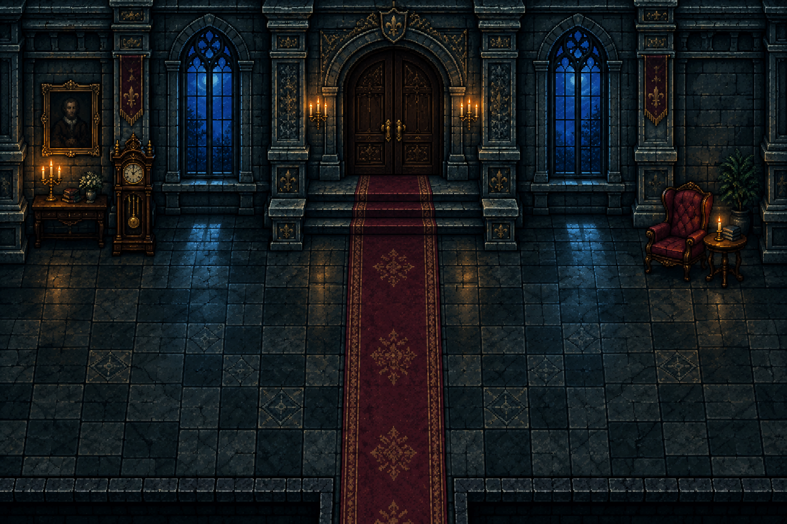
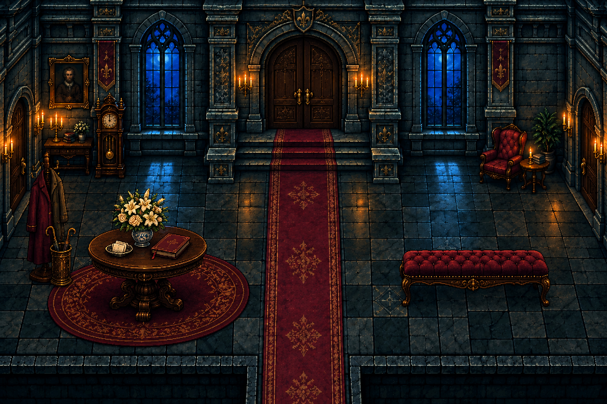
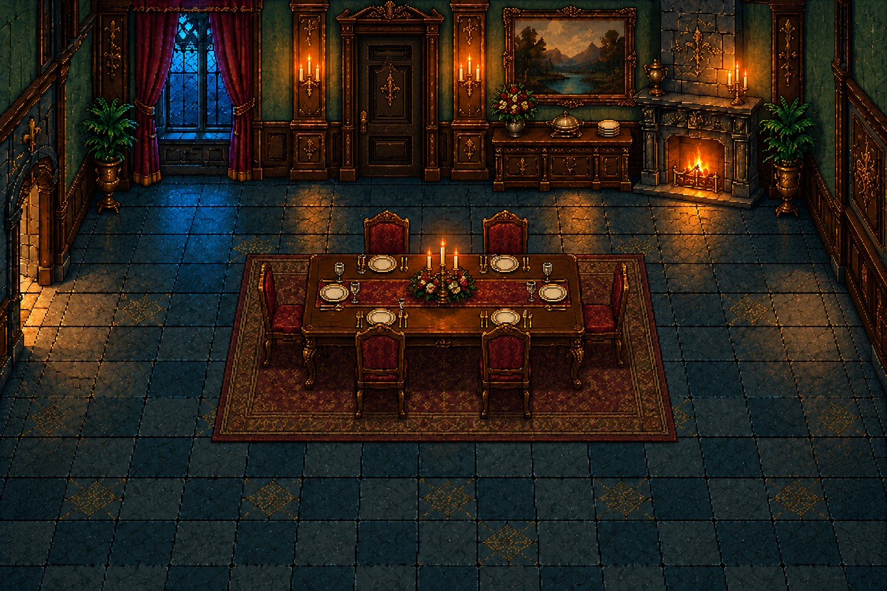

Four-door foyer: locked north front entrance; library west, main stairs east, dining south. Kitchen links north to library, east to dining and south to basement, creating a useful ground-floor loop.
Every east exit arrives west, every north exit arrives south, and vice versa. The same movement direction carries into the receiving room. No bent, same-side or corner-teleport connections.
Approved and integrated in compact-3. All 18 directed door/stair crossings pass actual physics walking without E, Enter or Space. New furniture IDs are provisional and still require pose-fit review. Open current in-game room captures.
Four doors including locked north front entrance. Added round welcome table/flowers/guest book, fitted rug, coat/umbrella area and upholstered bench; central runner and side-door routes remain clear for calibration.
Approved and integrated. Doors: NORTH 1, EAST 1, SOUTH 1, WEST 1
Previous artwork

g_foyer_n1_e1_s1_w1_draft_v2.png

Stair hall with west entrance
Keep straight staircase on right rising directly to its closed NORTH/back-wall upstairs door, same stair axis/geometry. Keep the WEST/left interior door to the foyer. REMOVE the SOUTH/bottom foreground entrance entirely: replace its central gap and threshold with continuous low foreground wall/balustrade matching the rest of the foreground boundary. No south opening, no east door. Exactly TWO doors: NORTH upstairs door at stair top and WEST foyer door. Preserve floor, window, lamps, stairs, wall design and room size.
Approved and integrated. Doors: NORTH 1, EAST 0, SOUTH 0, WEST 1
Keep dining table and SIX adult chairs at same scale and position, keep WEST/left doorway to kitchen. REMOVE EAST/right door, close that right side wall with matching stone/walnut paneling. Add ONE NORTH/back-wall interior door, preferably centered: replace/move the center painting and sideboard to create a full-height adult-sized north door with an unobstructed floor approach. Keep fireplace right and window left; reposition the painting/sideboard onto remaining solid wall if practical. Preserve furnished dining room identity. Exactly TWO doors NORTH to foyer and WEST to kitchen. No south opening.
Approved and integrated. Doors: NORTH 1, EAST 0, SOUTH 0, WEST 1
Previous artworkg_dining_n1_e0_s0_w1_draft_v2.png

Kitchen with north, east and south doors
Keep EAST/right doorway to dining room and SOUTH/bottom threshold to basement stairs. Add ONE clear full-height NORTH/back-wall doorway toward the right half, leading to library; replace/move part of the back-right pantry cabinet to make room. North door must face the viewer as part of back wall, distinct from right side-wall east door, with solid corner separating them. Keep range on back-left, sink/window near back-center, central-left preparation table and low work stool, cookware and storage. Move pantry storage to a solid west wall or remaining back wall as needed. Do not block new north-door approach with barrels, sacks or plants. Exactly THREE doors: NORTH, EAST, SOUTH. NO west door. Preserve a working kitchen rather than bar.
Approved and integrated. Doors: NORTH 1, EAST 1, SOUTH 1, WEST 0